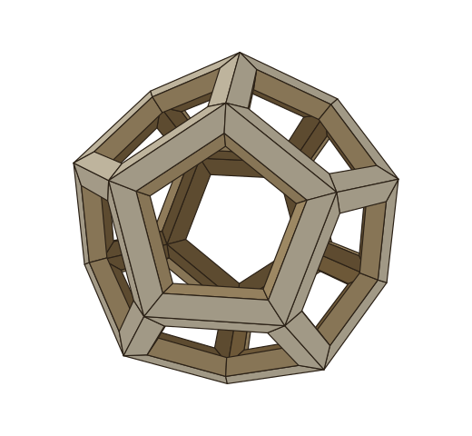

3D Symbolic Infrastructure & Multi-Engine Pipeline¶
Exact Symbolic 3D Modeling, Conway/Pacioli Operators, and Multi-Target Export Architecture
Sicut punctum est principium lineae, et linea superficiei, et superficies corporis: ita et scientia de corpore praesupponit scientiam de superficiebus, et haec de lineis, et haec de punctis.
Just as a point is the beginning of a line, a line of a surface, and a surface of a body: so also the science of body presupposes the science of surfaces, this of lines, and this of points.
—St. Thomas Aquinas, In De Caelo et Mundo, Lib. I, Lect. 2
The core design mandate of GEOMETOR Polyhedra is absolute mathematical truth: 100% exact symbolic algebra over algebraic number fields \(\mathbb{Q}(\phi, \sqrt{d})\), with zero floating-point approximations.
From a single exact symbolic model instantiated in geometor.polyhedra.model3d, the system drives a unified multi-engine pipeline delivering four distinct production targets: publication-grade 2D SVGs, interactive Book Codex canvas viewports, IngeTrazo CAD assemblies via MCP, and photorealistic studio rendering in Blender 5.x.
—
I. Exact Symbolic 3D Architecture (model3d)¶
Every spatial entity in geometor.polyhedra.model3d is grounded in SymPy symbolic expressions (\(\mathbb{Z}\), \(\mathbb{Q}\), \(\mathbb{Q}(\phi)\), \(\mathbb{Q}(\sqrt{d})\)). The module enforces a strict zero-float contract: passing Python float or sympy.Float values immediately raises a TypeError.
Spatial Primitives (primitives.py)¶
Class |
Exact Coordinates |
Key Operations & Algebraic Invariants |
|---|---|---|
|
\((x, y, z) \in \mathbb{K}^3\) |
Vector addition, scalar multiplication, dot product, cross product, exact quadrance \(Q(\mathbf{v}) = x^2 + y^2 + z^2\). |
|
\((x, y, z) \in \mathbb{K}^3\) |
Affine displacement \(P + \mathbf{v}\), vector difference \(P_1 \to P_2\), quadrance between points \(Q(P_1, P_2)\), exact linear interpolation \(\text{lerp}(P_2, t) = (1 - t)P_1 + t P_2\). |
|
\(P_1 + t(P_2 - P_1)\) |
Parametric 3D line passing through two exact points; direction vector, containment test. |
|
\(\mathbf{n} \cdot (P - P_0) = 0\) |
Exact plane equation \(ax + by + cz + d = 0\); normal vector, point projection, line-plane intersection, segment intersection. |
|
\((C, Q_R)\) |
Sphere center \(C \in \text{Point3D}\) and exact squared radius (quadrance) \(Q_R \in \mathbb{K}\); point power, intersection with lines. |
|
Frozen manifold |
Closed polyhedral surface holding exact vertices, face polygons, boundary edges, face centroids, outward normals, topological invariants (\(\chi, g\)), and semantic face roles. |
The Solid3D Manifold Data Model¶
Solid3D is a frozen, immutable data structure representing an exact orientable 2-manifold surface. Each face is stored as an ordered tuple of vertex indices wound counter-clockwise when viewed from the exterior.
from geometor.polyhedra.model3d import Point3D, Solid3D
from geometor.polyhedra.platonic import PHI
import sympy as sp
# Golden vertices of the regular icosahedron
verts = (
Point3D(sp.Integer(0), sp.Integer(1), PHI),
Point3D(sp.Integer(0), -sp.Integer(1), PHI),
Point3D(sp.Integer(0), sp.Integer(1), -PHI),
Point3D(sp.Integer(0), -sp.Integer(1), -PHI),
Point3D(sp.Integer(1), PHI, sp.Integer(0)),
Point3D(-sp.Integer(1), PHI, sp.Integer(0)),
Point3D(sp.Integer(1), -PHI, sp.Integer(0)),
Point3D(-sp.Integer(1), -PHI, sp.Integer(0)),
Point3D(PHI, sp.Integer(0), sp.Integer(1)),
Point3D(-PHI, sp.Integer(0), sp.Integer(1)),
Point3D(PHI, sp.Integer(0), -sp.Integer(1)),
Point3D(-PHI, sp.Integer(0), -sp.Integer(1)),
)
# Solid3D automatically computes edges, face centroids, face normals,
# Euler characteristic, and verifies planarity and orientation.
ico = Solid3D(slug="icosahedron", title="Regular Icosahedron", vertices=verts, faces=...)
assert ico.euler_characteristic == 2
assert ico.are_faces_coplanar()
assert ico.is_outward_oriented()
—
II. Conway & Pacioli Polyhedral Operators (operators.py)¶
The geometor.polyhedra.operators module provides five closed-form constructive geometric transformations that preserve exact algebraic coordinates:
1. Vacuate (vacuate)¶
Implements Leonardo da Vinci’s hollow wooden manifold (Corpus Vacuum). Concentric outer and inner frame rails are generated around central window openings with rational shrink parameters \(\mu\) (aperture) and \(\lambda\) (shell thickness):
2. Rectify (rectify)¶
Pacioli’s edge-midpoint truncation (Abscisum). Places vertices at the exact midpoints \(M_e = \frac{1}{2}(u + v)\) of all edges, transforming: - Tetrahedron \(\to\) Regular Octahedron (\(V=6, E=12, F=8\)) - Hexahedron \(\to\) Cuboctahedron (\(V=12, E=24, F=14\)) - Octahedron \(\to\) Cuboctahedron (\(V=12, E=24, F=14\)) - Dodecahedron \(\to\) Icosidodecahedron (\(V=30, E=60, F=32\)) - Icosahedron \(\to\) Icosidodecahedron (\(V=30, E=60, F=32\))
3. Truncate (truncate)¶
Archimedean corner-cutting at rational edge parameter \(t \in (0, 1/2)\) (default \(t = 1/3\)). Divides each directed edge into segments of ratio \(t : 1-2t : t\), producing: - Truncated Tetrahedron (\(V=12, E=18, F=8\)) - Truncated Octahedron (\(V=24, E=36, F=14\)) - Truncated Icosahedron (\(V=60, E=90, F=32\), Fullerene soccer ball)
4. Elevate (elevate)¶
Pacioli and Leonardo’s stellation operator (Elevatum / Conway kis). Replaces each \(k\)-gon face with \(k\) triangular facets meeting at an apex erected along the face normal. When height_scale=None, the module calculates the exact algebraic height:
where \(s^2\) is the face edge quadrance and \(r^2\) is the face circumquadrance, ensuring all lateral triangular facets are strictly equilateral.
5. Polar Dual (polar_dual)¶
Constructs the exact polar reciprocal across a concentric sphere of quadrance \(Q_S\). Each face plane is mapped to its pole vertex:
mapping the Cube to the Octahedron, the Dodecahedron to the Icosahedron, and the Tetrahedron to itself.
—
III. The Dimensional Bridge (bridge.py)¶
The dimensional bridge links 3D polyhedral manifolds directly into 2D constructive geometry and automated discovery engines:
Planar Cross-Section Slicing (slice_solid_to_model)¶
Computes the exact 3D planar cross-section of a Solid3D with an arbitrary slicing plane \(\Pi\), projects the intersection points onto orthonormal 2D axes \((\mathbf{u}, \mathbf{v})\), and constructs an exact 2D geometor.model.Model:
from geometor.polyhedra.model3d import Plane3D, Point3D, Vector3D, slice_solid_to_model
from geometor.divine import scan_model_for_golden_sections
import sympy as sp
# Slice dodecahedron along an equatorial golden plane
plane = Plane3D.from_point_and_normal(
Point3D(0, 0, 0),
Vector3D(0, 0, sp.Integer(1)),
)
u_axis = Vector3D(sp.Integer(1), 0, 0)
v_axis = Vector3D(0, sp.Integer(1), 0)
model2d = slice_solid_to_model(dodecahedron, plane, u_axis, v_axis, name="dodec_slice")
# Automated discovery scans the exact 2D model for golden sections and harmonic ranges!
golden_sections = scan_model_for_golden_sections(model2d)
2D Net Unfolding (unfold_net_2d)¶
Unfolds the 3D polygonal faces of any convex solid onto a 2D Euclidean plane via a breadth-first spanning tree over the polyhedral dual graph:
Begins at an initial root face positioned at the 2D origin.
Flattens each neighbor face along its shared hinge edge using 2D rotation matrices.
Guarantees zero backwards folding and produces clean, non-overlapping papercraft nets suitable for physical cardboard assembly and SVG visualization.

Unfolded 2D Net: Exact planar layout of the regular octahedron, displaying hinge fold lines and cut boundaries.¶
—
IV. The Multi-Engine Export Pipeline¶
A single exact Solid3D model drives four independent downstream rendering targets:
Target |
Technology |
Output Artifact |
Key Capabilities |
|---|---|---|---|
1. 2D Vector SVGs |
|
Standalone |
Perspective projection, depth sorting, chiaroscuro shading, dark-mode CSS classes, .euclid-graphic integration. |
2. Interactive Codex |
|
HTML5 Canvas Mount |
Real-time quaternion rotation, trackball drag, variant switcher (Solidum/Vacuum/Abscisum/Elevatum), dual overlays. |
3. IngeTrazo CAD |
|
Python Script & Wavefront OBJ/MTL |
Live MCP bridge, multi-layer scene layout ( |
4. Blender 5.x Studio |
|
Standalone Python Studio Generator |
Studio 3-point lighting, Principled BSDF Renaissance woodcut materials (Boxwood, Alabaster, Gold), Cycles/EEVEE rendering. |
Target 1: Publication-Grade 2D SVGs (render.svg3d)¶
The render_solid_svg engine projects 3D solids onto 2D vector viewports using perspective transformation, painter’s depth sorting, directional light intensity calculations, and semantic styling:
Renaissance Palette: Outer boxwood beams, darker inner reveals, and walnut cavities for corpora vacua.
Platonic Elemental Palette: Fire crimson (Tetrahedron), Earth ochre (Hexahedron), Air sky-blue (Octahedron), Water azure (Icosahedron), and Aether royal violet (Dodecahedron).

Publication SVG: Dodecahedron Planum Vacuum rendered with Renaissance boxwood frame styling, deep window jambs, and exact depth sorting.¶
Target 2: Interactive Book Codex 3D Canvas¶
Embedded directly into Sphinx Book Codices via lightweight HTML mounts:
<div class="polyhedra-3d-mount" data-solid="icosahedron" data-initial-variant="vacuum"></div>
The client-side engine (polyhedra_3d_codex.js) initializes automatically on document load:
- Quaternion trackball rotation with smooth damping and momentum coasting.
- Interactive controls for aperture width \(\mu\) and shell scaling \(\lambda\).
- Golden ratio diagnostic toggles (Euclidean 5-cubes compound, internal golden rectangles, circumscribed spheres).
Target 3: IngeTrazo 0.6.0 CAD & Live MCP Bridge¶
The pipeline exports both standard Wavefront CAD files (.obj and companion .mtl with Renaissance material definitions) and direct IngeTrazo 0.6.0 Python scripts:
from geometor.polyhedra.model3d import Solid3D
from geometor.polyhedra.operators import vacuate
from geometor.polyhedra.platonic import get_platonic_solids
from geometor.polyhedra.render import export_ingetrazo_script, export_obj_mtl
from pathlib import Path
solids_raw = get_platonic_solids()
dodec = Solid3D.from_regular_solid(solids_raw["dodecahedron"])
dodec_vac = vacuate(dodec)
# Export CAD Wavefront OBJ/MTL
export_obj_mtl(dodec_vac, Path("demos/exports/dodecahedron_vacuum.obj"))
# Export executable IngeTrazo scene script
export_ingetrazo_script(
[dodec, dodec_vac],
Path("demos/exports/build_ingetrazo_polyhedra.py"),
)
IngeTrazo CAD scripts can be executed directly inside the user’s live parametric CAD session using the IngeTrazo MCP Server (call_mcp_tool(ServerName="ingetrazo", ToolName="run_python", ...)), allowing agents to construct, inspect, and screenshot polyhedral CAD models programmatically.
Target 4: Blender 5.x Studio Renderer¶
For photorealistic publication renders and animations, export_blender_script emits a self-contained Python script tailored for modern Blender 5.x:
Configures a dedicated
GEOMETOR_Polyhedracollection.Builds multi-layer polyhedral meshes with correct vertex normals and face winding.
Instantiates calibrated Principled BSDF materials: - Italian Boxwood: Warm, sunlit diffuse tone with subtle micro-roughness. - Alabaster: Translucent parchment stone with soft specular highlights. - Walnut: Deep shadowed cavities for interior hollow frames. - Gold: Metallic golden highlights for stellation apices.
Sets up high-key studio lighting with key, fill, and rim lights, and orients an orthographic/perspective camera with depth of field.
from geometor.polyhedra.render import export_blender_script
from pathlib import Path
# Generate Blender 5.x studio script
export_blender_script(
[tet, cube, octa, ico, dodec],
Path("demos/exports/build_blender_polyhedra.py"),
spacing=5.0,
)
The generated script can be executed headlessly via blender --background --python demos/exports/build_blender_polyhedra.py to produce publication-grade renders.